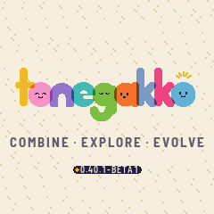
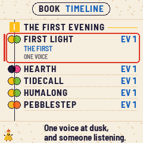
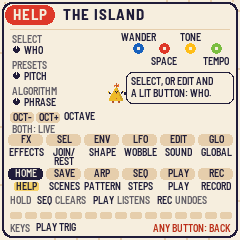

1
Switch on
The logo prints itself plate by plate, then the island opens, already playing. Nothing to press yet: listen for a moment.
New firmware for the M-VAVE FM-1
OPEN BETA · 0.40 BETA 1.0.1An island, printed like a woodblock, where small creatures called the Sonari wander and sing together. What they play together becomes new styles to find. It is a calm little game and a real instrument at once: the keys always play whoever you choose.
11af4ef9c96ef3de9fd2bd4ca06e0f68d2094633954b03c2ba3b922c4f416a33Installing is at your own risk. The installer can put M-VAVE's own firmware back at any time. Tonegakko is not made or supported by M-VAVE.
78 seconds, with sound
About five minutes
Connect it to your computer with its USB cable and switch it on.
In Chrome or Edge. When it asks to use MIDI devices, allow it: that is how the page talks to the FM-1.
Open the installerIt finds the FM-1, checks what it's running and writes Tonegakko. Keep the cable in until it says it's done.

The FM-1 restarts, the logo prints itself, and the badge reads 0.40.1-BETA1. Then the island opens, already playing. Carry on with Play.
Running M-VAVE's "FM1 Open" firmware? Put M-VAVE's standard FM-1 firmware back first, then install.
Put beta 1 on one of the newer FM-1s? Those (sold since autumn 2026, the logo on the front) have a different memory chip, which beta 1 did not know: it played, but kept nothing after switching off, and this page cannot reach it to update it. Put M-VAVE's firmware back first: hold REC while you switch the FM-1 on (the chip's own update mode), plug it into a Mac or Linux computer and run felucca-bsp's rescue in a terminal. It backs the FM-1 up, then writes M-VAVE's firmware. Then install 1.0.1 here as usual.
bash -c "$(curl -fsSL https://raw.githubusercontent.com/hugelton/felucca-bsp/main/tools/fm1_rescue.sh)"
On Windows, or if it does not work, open an issue and we will help.
Want to go back? Open the same installer: it can write M-VAVE's own FM-1 firmware again, any time.
Installing offline? Download the zip, unzip it, and serve it with Python from a terminal in the folder that holds it:
cd tonegakko-0.40.1-beta1-installer && python3 -m http.server 8000
Then open http://localhost:8000/install/ in Chrome or Edge.
Prefer the command line? With pip3 install mido python-rtmidi and fm1-base's installer:
python3 tools/fm1_install.py tonegakko-0.40.1-beta1.fwsc
Checksums for the zip and the firmware: SHA256SUMS.txt
Nine things to try
Every button opens its own page, and pressing it again brings you back. Lost? Press HOME on any page for a card of everything you can press there.
The logo prints itself plate by plate, then the island opens, already playing. Nothing to press yet: listen for a moment.
Turn SELECT
A ring turns at the chosen one's feet, a pin bobs over its head, and its name shows for a moment.
Quicker: hold EDIT and every Sonari shows its button. Press one to choose it.
Press SEL to let it rest, and again to bring it back in.
Press EDIT, then play the keys
A close-up of the chosen one, its SOUND page. The keys always play it, soft or hard, and it answers with every note.
In the close-up, turn SELECT
The chosen one becomes another Sonari, with its own voice: bells, drums, a hum, a frog that sings after rain.
Hold EDIT and let go, then turn K1 K2 K3 K4
Its SYNTH: five little scenes that move as you turn. An orrery, clockwork, a water mill, a loom, an aquarium. Each knob's part is drawn in that knob's colour.
SELECT picks the scene.
Hold FX and press white keys
A punch-in for each key, for as long as you hold it: wash, dark, fuzz, double, drop and more. Let go and it snaps back.
On the island, turn K2 and K4
K2 is the space in the sound, and the weather with it: haze, fog, then rain. K4 is the tempo, and the wind.
Press GLO, then turn K1
The island seen from the sea. K1 is the key, and each key is an hour: morning, midday, dusk, nightfall.
Press GLO again to go back to the island.

Leave it playing. To look, press GLO and choose THE BOOK
What the Sonari play together becomes styles, 32 of them, written into the Book as you find them. The seasons turn while you play, too.
Keep this open beside you

Before you report something
This is why it's a beta
Open an issue on GitHub. A good report says:
0.40.1-BETA1).Liked something? Say that too. It helps us know what to keep.
Report on GitHubYou need a free GitHub account to open an issue.